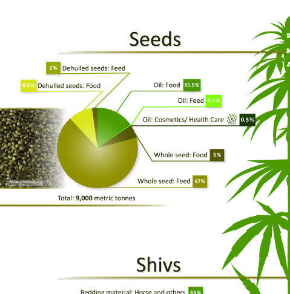
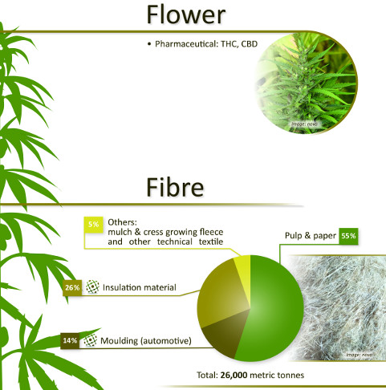
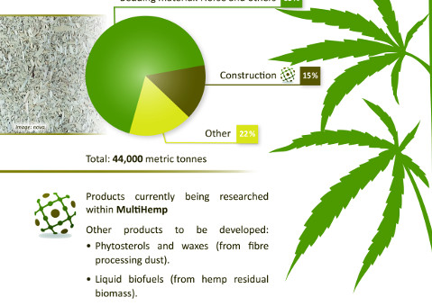
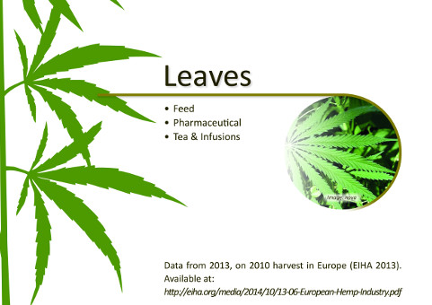

A powerful and popular Java Script library
The web language: Hypertext Markup Language
A mobile first web framework
High level popular programming language
Hemp fibres have some of the best mechanical properties of all natural fibres. They are mainly used for speciality pulp & paper, insulation material and for bio-composites in automotive applications. Before the rediscovery of industrial Hemp in Europe in the 1990s, Hemp fibres were mainly (> 95%) used for speciality pulp & paper. Even in 2014, Hemp pulp & paper with a share of 57% is still the most important market for European Hemp Fibres, supplied mainly by French producers. Insulation material is the second most important application for Hemp fibres today. Insulation material accounts for 26% of the applications. Other non-woven applications are mulch fleeces for gardens and agricultureand cress growing fleeces (in some European countries) are the dominant medium used for cress cultivation. Together with other non-wovens such as mats for farrowing pigs they bring the share of these applications to 30%. Biocomposites account for 14% of the applications. The only really established biocomposite market is press moulding in automotive interior applications with a share of 95% of all biocomposites. This corresponds to more than 3,500 tonnes of Hemp fibre or about 7,500 tonnes of biocomposites (natural fibre content varies between 30 and 70%). Automotive biocomposites for interior applications are still a growing market and are used for door panels/inserts, trunkliners, spare wheel covers, parcel trays, headliners, A-B-C columns and much more.